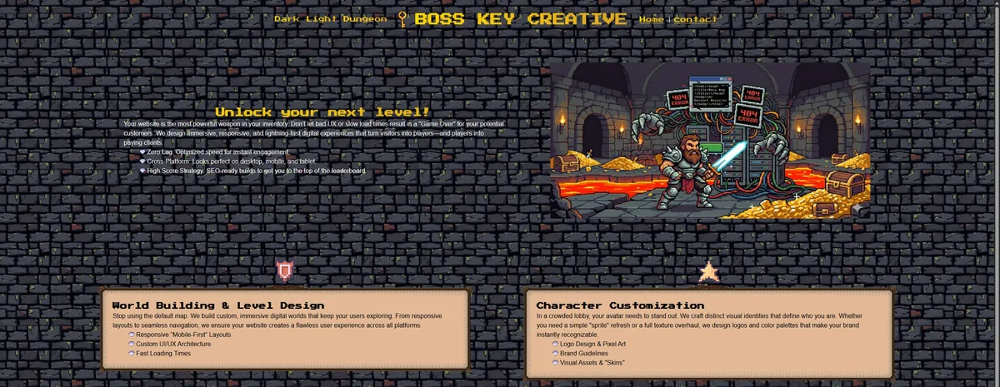

Integrations and data
APIs, multi-platform ecommerce sync, data migration, T-SQL development including stored procedures and triggers, end-to-end client onboarding.
Technical Solutions Engineer
Integrations, Front-End and Automation
Technical solutions engineer working with over 100 clients to provide ecommerce sites integrated with a bespoke EPOS, reporting and stock management software. I cover API and integration work, database management, front-end builds, and the training and consultancy that goes with them.
APIs, multi-platform ecommerce sync, data migration, T-SQL development including stored procedures and triggers, end-to-end client onboarding.
Bespoke responsive builds, landing pages, brand-led design, Magento 2 theming and Page Builder, semantic HTML, CSS and JavaScript, GA4 and Google Tag Manager.
Workflow automation with Make.com and Power Automate, LLM integration via the Claude API, internal tooling, process analysis.
An agency brand and site built from scratch in HTML5, CSS3 and JavaScript. I designed the brand identity, wrote the copy and set the visual direction, then built it mobile-first with interactive DOM manipulation and a custom light and dark mode toggle. It is the piece I point at when someone wants to see design and front-end in the same place, rather than described separately.

A Proxmox virtualisation host running Docker services and VPN-routed containers, with Cloudflare Tunnel for secure remote access and fail2ban enforcement applied via API. I also administer a UK VPS running persistent game servers, covering provisioning, updates and remote access. It is where most of what I know about networking, containers and the ways remote access goes wrong was actually learned.
I am based in Tonbridge, Kent, and open to remote and London hybrid work.
Most of what I do sits in the gap between systems that were never designed to talk to each other. That mostly means reading logs properly, being stubborn about reproducing a fault, and knowing the difference between a thing that is broken and a thing that is behaving exactly as written. I like the moment a problem stops being mysterious.
The rest of it is people. Explaining a root cause to someone who does not want a lecture on HTTP status codes is a real skill, and I have got better at it than I used to be.